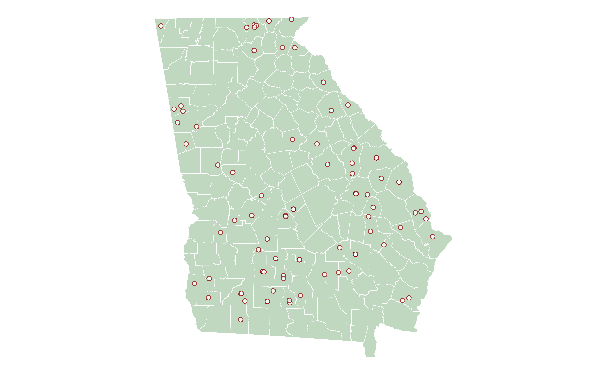

Mapping Providers
Demographics, Patient Mix, and Performance
Andrew Bruce
2023-11-15
Source:vignettes/articles/geospatial.Rmd
geospatial.RmdRetrieve NPIs of all RHCs in Georgia
rhcs <- providers(state = "GA", specialty_code = "00-17") |>
dplyr::distinct(npi) |>
dplyr::pull(npi) |>
purrr::map(\(x) nppes(npi = x)) |>
purrr::list_rbind() |>
dplyr::select(npi,
organization,
tx_desc,
org_part,
purpose,
org_parent,
on_type,
on_org_name,
address,
city,
state,
zip,
pr_purpose,
pr_address,
pr_city,
pr_state,
pr_zip)
rhcs#> # A tibble: 197 × 17
#> npi organization tx_desc org_part purpose org_parent on_type on_org_name
#> <chr> <chr> <chr> <lgl> <fct> <chr> <chr> <chr>
#> 1 1992710… TMC HARALSO… Family… FALSE Practi… NA Doing … PRIMARY CA…
#> 2 1992710… TMC HARALSO… Family… FALSE Practi… NA Doing … PRIMARY CA…
#> 3 1992710… TMC HARALSO… Family… FALSE Practi… NA Doing … PRIMARY CA…
#> 4 1992710… TMC HARALSO… Clinic… FALSE Practi… NA Doing … PRIMARY CA…
#> 5 1992710… TMC HARALSO… Clinic… FALSE Practi… NA Doing … PRIMARY CA…
#> 6 1992710… TMC HARALSO… Clinic… FALSE Practi… NA Doing … PRIMARY CA…
#> 7 1497760… TMC TALLAPO… Family… FALSE Practi… NA NA NA
#> 8 1497760… TMC TALLAPO… Family… FALSE Practi… NA NA NA
#> 9 1497760… TMC TALLAPO… Family… FALSE Practi… NA NA NA
#> 10 1497760… TMC TALLAPO… Clinic… FALSE Practi… NA NA NA
#> # ℹ 187 more rows
#> # ℹ 9 more variables: address <chr>, city <chr>, state <ord>, zip <chr>,
#> # pr_purpose <fct>, pr_address <chr>, pr_city <chr>, pr_state <ord>,
#> # pr_zip <chr>Stack Distinct LOCATION & PRACTICE
Addresses
stack <- dplyr::bind_rows(
dplyr::select(rhcs,
npi,
organization,
tx_desc,
org_part,
purpose,
org_parent,
on_type,
on_org_name,
address,
city,
state,
zip),
dplyr::select(rhcs,
npi,
organization,
tx_desc,
org_part,
purpose = pr_purpose,
org_parent,
on_type,
on_org_name,
address = pr_address,
city = pr_city,
state = pr_state,
zip = pr_zip)) |>
dplyr::filter(!is.na(purpose)) |>
tidyr::nest(specialty = tx_desc,
other_names = c(org_parent,
on_type,
on_org_name)) |>
add_counties(zcol = zip) |>
tidyr::unite("address",
address:state,
remove = TRUE,
sep = " ")
stack#> Simple feature collection with 90 features and 12 fields
#> Geometry type: MULTIPOLYGON
#> Dimension: XY
#> Bounding box: xmin: -85.60516 ymin: 30.10375 xmax: -80.78296 ymax: 35.0013
#> Geodetic CRS: WGS 84
#> # A tibble: 90 × 13
#> npi organization org_part purpose address zip specialty other_names
#> <chr> <chr> <lgl> <fct> <chr> <chr> <list> <list>
#> 1 1992710610 TMC HARALSON… FALSE Practi… 204 AL… 30110 <tibble> <tibble>
#> 2 1497760243 TMC TALLAPOO… FALSE Practi… 25 W L… 30176 <tibble> <tibble>
#> 3 1285706879 HIAWASSEE FA… FALSE Practi… 56 HOS… 30546 <tibble> <tibble>
#> 4 1982631321 TMC WEST CAR… FALSE Practi… 1125 E… 30108 <tibble> <tibble>
#> 5 1821017831 BACON COUNTY… FALSE Practi… 204 E … 31510 <tibble> <tibble>
#> 6 1750339511 BOWDON- MT. … TRUE Practi… 41 WEL… 30185 <tibble> <tibble>
#> 7 1366472003 HOSPITAL AUT… FALSE Practi… 25 PER… 31730 <tibble> <tibble>
#> 8 1891863569 THE MEDICAL … FALSE Practi… 109 CO… 30635 <tibble> <tibble>
#> 9 1578682696 UNION COUNTY… FALSE Practi… 178 A … 30512 <tibble> <tibble>
#> 10 1922211515 HOSPITAL AUT… FALSE Practi… 259 US… 31730 <tibble> <tibble>
#> # ℹ 80 more rows
#> # ℹ 5 more variables: county <chr>, lat <dbl>, lng <dbl>, fips <chr>,
#> # geometry <MULTIPOLYGON [°]>Send to {tidygeocoder}
rhc_geo <- dplyr::select(stack, npi:zip) |>
tidygeocoder::geocode(address = address,
method = "mapbox",
full_results = TRUE,
unique_only = FALSE,
return_input = TRUE) |>
dplyr::select(npi, zip, place_name, lat, long)
rhc_geo#> # A tibble: 90 × 5
#> npi zip place_name lat long
#> <chr> <chr> <chr> <dbl> <dbl>
#> 1 1992710610 30110 204 Allen Memorial Drive, Bremen, Georgia 30110… 33.7 -85.1
#> 2 1497760243 30176 25 W Lyon St, Tallapoosa, Georgia 30176, United… 33.7 -85.3
#> 3 1285706879 30546 56 Hospital Drive, Hiawassee, Georgia 30546, Un… 34.9 -83.8
#> 4 1982631321 30108 1125 E Highway 166, Jonesville, Georgia 30108, … 33.6 -85.2
#> 5 1821017831 31510 204 East 15th Street, Alma, Georgia 31510, Unit… 31.5 -82.5
#> 6 1750339511 30185 41 Wellington Mill Road, Whitesburg, Georgia 30… 33.5 -84.9
#> 7 1366472003 31730 25 Perry Street, Camilla, Georgia 31730, United… 31.2 -84.2
#> 8 1891863569 30635 109 College Avenue, Elberton, Georgia 30635, Un… 34.1 -82.9
#> 9 1578682696 30512 178 Hospital Rd, Blairsville, Georgia 30512, Un… 34.9 -84.0
#> 10 1922211515 31730 259 US Route 19, Camilla, Georgia 31730, United… 31.2 -84.2
#> # ℹ 80 more rowsRetrieve Georgia counties shapefile from {tigris}
ga_counties <- tigris::counties(state = "GA", year = 2022, progress_bar = FALSE)
ga_counties#> Simple feature collection with 159 features and 17 fields
#> Geometry type: MULTIPOLYGON
#> Dimension: XY
#> Bounding box: xmin: -85.60516 ymin: 30.35576 xmax: -80.78296 ymax: 35.0013
#> Geodetic CRS: NAD83
#> First 10 features:
#> STATEFP COUNTYFP COUNTYNS GEOID NAME NAMELSAD LSAD CLASSFP MTFCC
#> 16 13 189 00348794 13189 McDuffie McDuffie County 06 H1 G4020
#> 53 13 025 00351605 13025 Brantley Brantley County 06 H1 G4020
#> 54 13 171 00326713 13171 Lamar Lamar County 06 H1 G4020
#> 83 13 115 00353665 13115 Floyd Floyd County 06 H1 G4020
#> 101 13 273 00352238 13273 Terrell Terrell County 06 H1 G4020
#> 102 13 063 01672399 13063 Clayton Clayton County 06 H1 G4020
#> 105 13 073 00348865 13073 Columbia Columbia County 06 H1 G4020
#> 126 13 193 00346957 13193 Macon Macon County 06 H1 G4020
#> 146 13 049 00357747 13049 Charlton Charlton County 06 H1 G4020
#> 147 13 233 00343585 13233 Polk Polk County 06 H1 G4020
#> CSAFP CBSAFP METDIVFP FUNCSTAT ALAND AWATER INTPTLAT INTPTLON
#> 16 <NA> <NA> <NA> A 666591525 23112523 +33.4806126 -082.4795333
#> 53 <NA> <NA> <NA> A 1147972258 10291563 +31.1973339 -081.9829779
#> 54 <NA> <NA> <NA> A 475264405 6044329 +33.0744405 -084.1466893
#> 83 <NA> <NA> <NA> A 1320431515 22387093 +34.2636901 -085.2136849
#> 101 <NA> <NA> <NA> A 869695791 4951325 +31.7771909 -084.4394464
#> 102 <NA> <NA> <NA> A 367145192 6928044 +33.5516027 -084.4128678
#> 105 <NA> <NA> <NA> A 751598754 45345677 +33.5520746 -082.2496077
#> 126 <NA> <NA> <NA> A 1037709945 13841916 +32.3626859 -084.0512306
#> 146 <NA> <NA> <NA> A 2020415648 5963237 +30.7799036 -082.1396442
#> 147 <NA> <NA> <NA> A 803775591 4664760 +33.9960153 -085.1883384
#> geometry
#> 16 MULTIPOLYGON (((-82.6497 33...
#> 53 MULTIPOLYGON (((-81.91301 3...
#> 54 MULTIPOLYGON (((-84.2484 33...
#> 83 MULTIPOLYGON (((-85.02322 3...
#> 101 MULTIPOLYGON (((-84.3052 31...
#> 102 MULTIPOLYGON (((-84.45843 3...
#> 105 MULTIPOLYGON (((-82.44285 3...
#> 126 MULTIPOLYGON (((-83.83685 3...
#> 146 MULTIPOLYGON (((-82.42036 3...
#> 147 MULTIPOLYGON (((-85.16059 3...
{ggplot}
p <- ggplot2::ggplot() +
ggplot2::geom_sf(data = ga_counties, fill = "darkgreen", colour = "white", alpha = 0.25) +
#ggplot2::geom_sf(data = stack, size = 3, fill = "white") +
ggplot2::geom_point(rhc_geo,
mapping = ggplot2::aes(long, lat),
fill = "white",
color = "darkred",
alpha = 0.75,
size = 1.5,
shape = 21,
stroke = 0.5) +
# geom_label_repel(rhc_crd,
# mapping = aes(long, lat, label = organization),
# force_pull = 0,
# force = 2,
# direction = "both",
# segment.curvature = -0.1,
# segment.ncp = 3,
# segment.angle = 20,
# min.segment.length = 0,
# nudge_x = 2.5,
# nudge_y = 0.5) +
ggplot2::theme_void()
p + ggsflabel::lims_bbox(ga_counties)